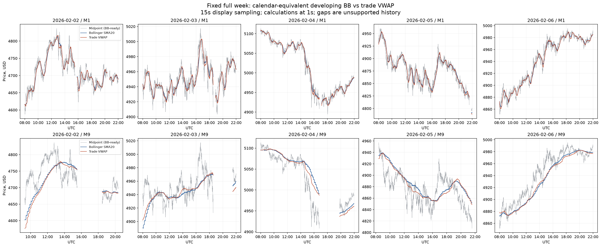
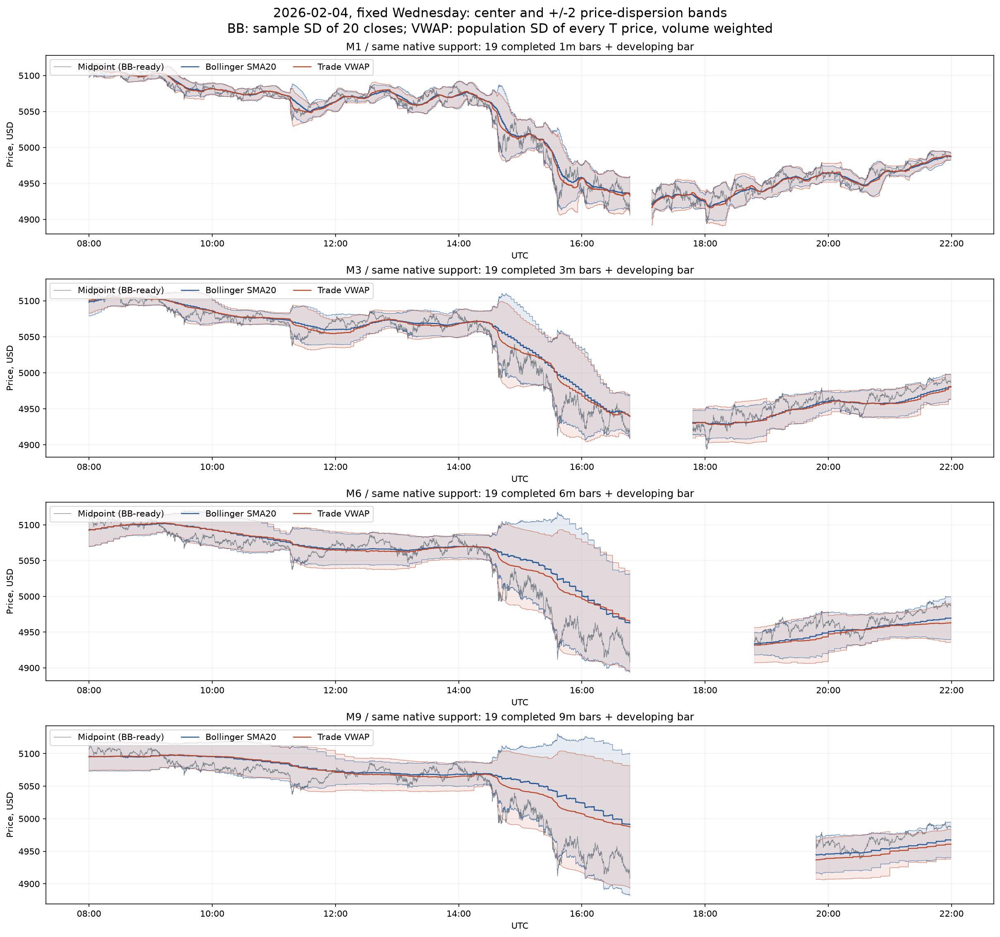
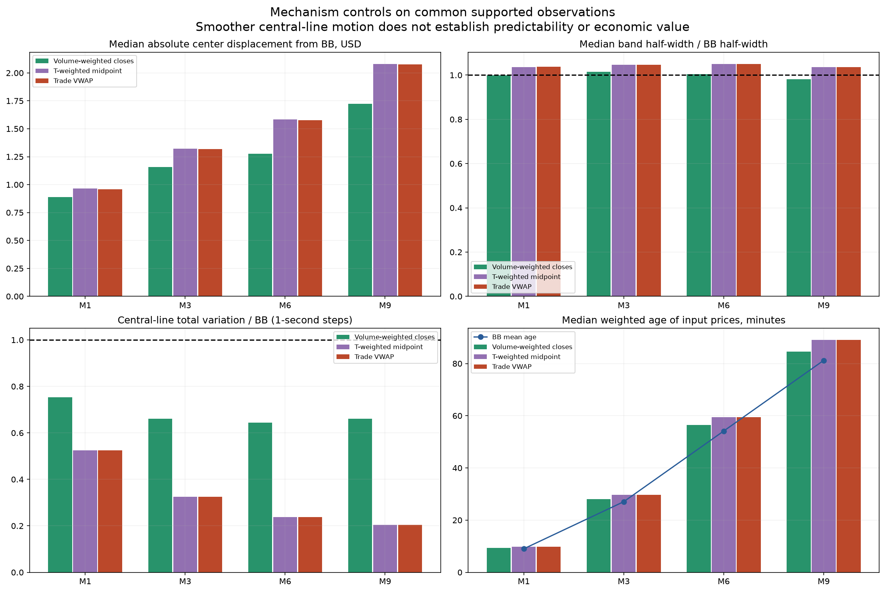
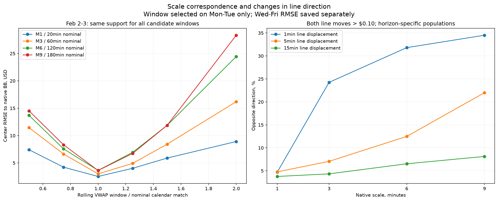
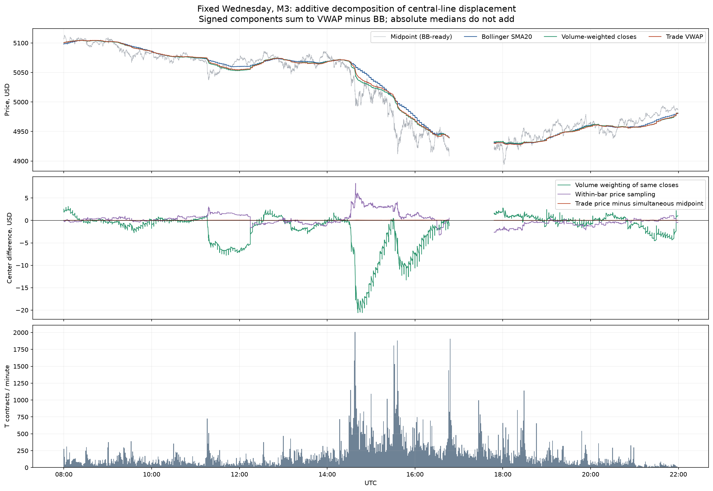
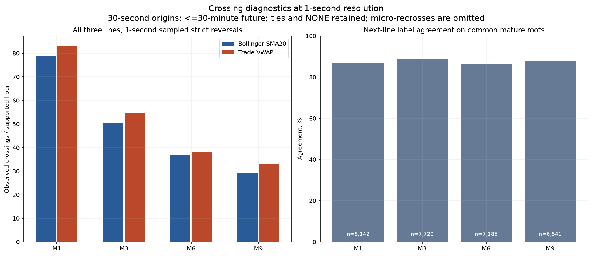

2–6 февраля 2026 · GCJ6 · пять полных торговых дней · 922,861 исходных T за неделю с подготовительной историей.
BB = 20 native midpoint closes, включая формирующуюся цену, ±2 sample SD (ddof=1). Основной VWAP = Σ(цена T × объём T)/Σобъём T; полосы ±2√[Σобъём T × (цена T − VWAP)² / Σобъём T]. Это взвешенное распределение цен, не ошибка оценки среднего. Окно основного сравнения совпадает по времени: 19 завершённых свечей и текущая часть свечи. Роллинг VWAP на ровно 20/60/120/180 минут сохранён отдельно.
Данные доступны только после полной публикации. T с неизвестным агрессором включены; F/C не дублируют объём. Исходный месячный файл и шесть суточных частей перепроверены по SHA256; суммы T совпали с независимыми накопительными счётчиками. При разрывах и смене поддержки окно прогревается заново. Точного broker parity с cTrader не заявляется.
| BB | VWAP, календарный аналог | Общих секунд | |Δ центра| медиана, $ | |Δ центра| p90, $ | Ширина / BB | Движение линии / BB | Цена по другую сторону средней |
|---|---|---|---|---|---|---|---|
| M1 | 20 мин | 245,821 | 0.96 | 3.22 | 1.038 | 0.524 | 4.6% |
| M3 | 60 мин | 235,892 | 1.32 | 4.74 | 1.046 | 0.326 | 4.7% |
| M6 | 120 мин | 221,522 | 1.58 | 5.95 | 1.050 | 0.237 | 3.6% |
| M9 | 180 мин | 206,401 | 2.08 | 7.81 | 1.035 | 0.204 | 3.8% |
Движение линии — сумма абсолютных секундных изменений на общей непрерывной поддержке. Разница определений дисперсии тоже сохранена: BB sample SD на 2,60% больше собственного population SD. Ширины не подгонялись. Наблюдения перекрываются; число секунд не равно числу независимых примеров.
Проверены множители 0,5 / 0,75 / 1 / 1,25 / 1,5 / 2 к календарному окну. Минимум RMSE средней линии выбирался на 2–3 февраля, проверка выполнена на 4–6 февраля. У всех кандидатов одна общая поддержка. Это подбор геометрического соответствия в данной сетке, не универсальная оптимизация.
| BB | Выбранный rolling VWAP | RMSE центра 4–6 февраля, $ | Секунд проверки |
|---|---|---|---|
| M1 | 20 мин | 1.974 | 147,087 |
| M3 | 60 мин | 2.571 | 142,287 |
| M6 | 120 мин | 3.565 | 129,524 |
| M9 | 180 мин | 4.613 | 118,075 |
Доля противоположных знаков изменения, только когда обе линии сдвинулись больше чем на один тик ($0,10). После процента указано число таких пар. Для каждого горизонта выборка своя; изменение средней за минуту не тождественно направлению многочасового тренда.
| Масштаб | За 1 минуту / n | За 5 минут / n | За 15 минут / n |
|---|---|---|---|
| M1 | 4.7% / 204,341 | 4.8% / 233,469 | 3.8% / 233,844 |
| M3 | 24.3% / 122,486 | 7.1% / 214,348 | 4.3% / 222,663 |
| M6 | 31.8% / 88,256 | 12.5% / 190,398 | 6.5% / 205,611 |
| M9 | 34.5% / 67,808 | 22.0% / 165,251 | 8.1% / 190,957 |
VWMA на тех же closes изолирует изменение весов. VWAP midpoint в моменты T добавляет внутрисвечную траекторию, а точный VWAP заменяет midpoint ценой сделки. Эти signed различия складываются; медианы абсолютных различий складывать нельзя.






Измерения и соответствие масштабов · Исходные сделки и сверка объёмов · 400 прямых проверок VWAP и причинности · Направления и секундные пересечения · Аудит Sol 6.1
Опыт описывает одну неделю и геометрию линий. Он не устанавливает превосходство торговой стратегии. Результаты прежнего BB-опыта сохранены отдельно.